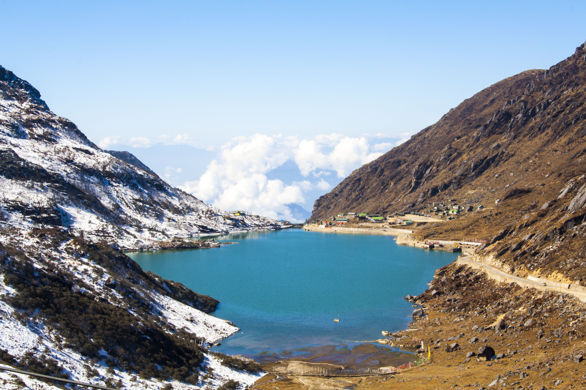
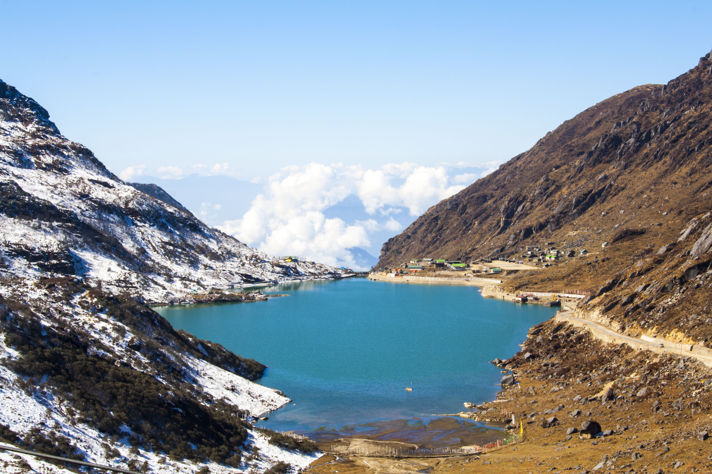

Places to Visit
-
Gangtok

 

Gangtok, the capital city of Sikkim, is nestled in the eastern Himalayan range at an altitude of 1,650 meters (5,410 feet). It is known for its stunning natural beauty, rich culture, and vibrant atmosphere. Here is some information about Gangtok:
- Scenic Beauty: Gangtok offers breathtaking views of snow-capped mountains, lush green valleys, and cascading waterfalls. The city's landscape is adorned with colorful flowers and dense forests, making it a paradise for nature lovers.
- Cultural Diversity: Gangtok is home to a diverse population comprising Nepali, Bhutia, and Lepcha communities, among others. This cultural amalgamation is reflected in the city's architecture, cuisine, and festivals, making it a melting pot of traditions and customs.
- Adventure Activities: Gangtok is a hub for adventure enthusiasts, offering a wide range of activities such as trekking, river rafting, paragliding, and mountain biking. Popular trekking destinations include Dzongri Trek, Goechala Trek, and Kanchenjunga Base Camp Trek.
- Shopping: Visitors can indulge in shopping at various markets and boutiques in Gangtok, where they can find traditional Sikkimese handicrafts, woolen garments, Tibetan artifacts, and souvenirs.
- Cuisine: Gangtok offers a diverse culinary experience, with a mix of Tibetan, Nepali, and Sikkimese cuisines. Visitors can savor local delicacies such as momos, thukpa, gundruk, and traditional Sikkimese dishes like Phagshapa and Chhurpi Soup
- Accessibility:Gangtok is well-connected by road and air. The nearest airport is Bagdogra Airport in West Bengal, located approximately 125 kilometers away, while the nearest railway station is New Jalpaiguri (NJP) Railway Station, approximately 148 kilometers away. Regular buses and taxis ply between Gangtok and nearby cities.
Overall, Dal Lake is a must-visit destination for travelers seeking tranquility, natural beauty, and a glimpse into the rich cultural heritage of Kashmir.